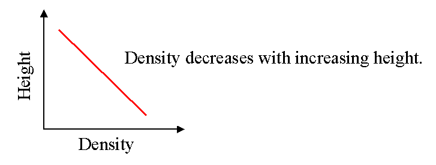
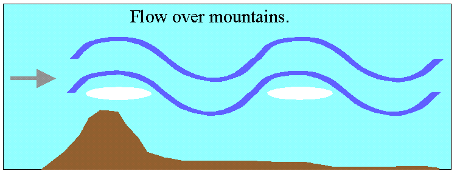
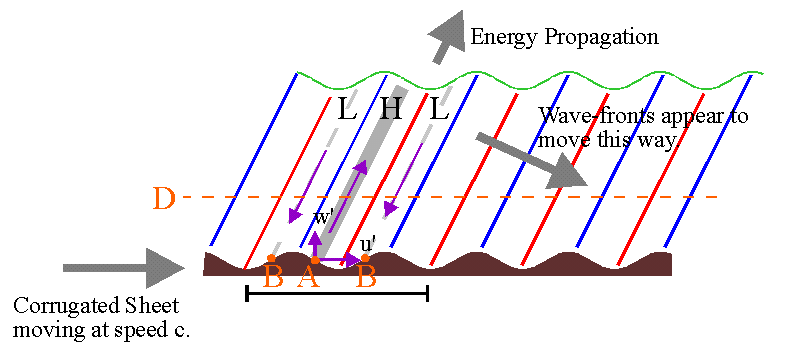
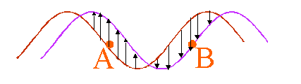
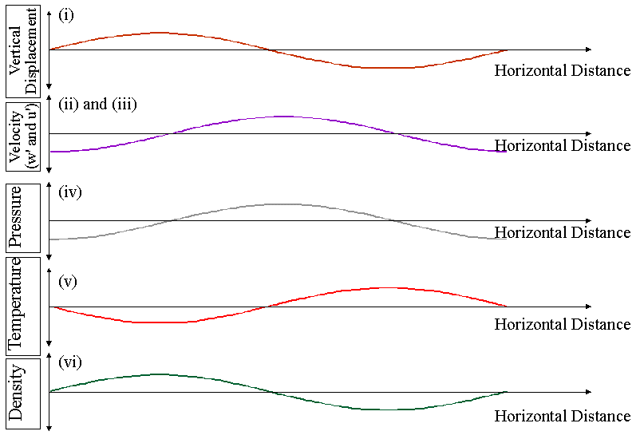
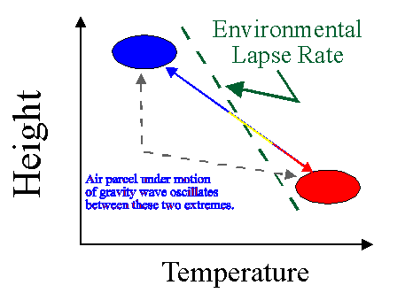
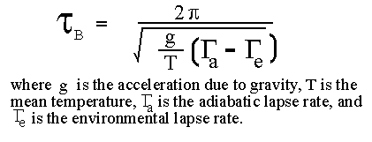
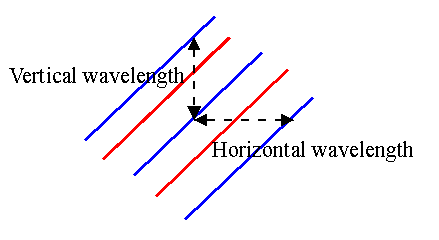
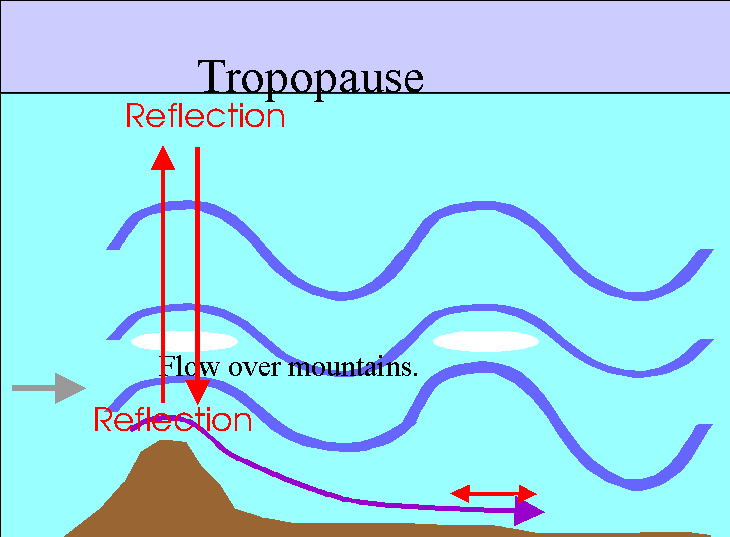

1. Introduction
Most people are familiar with waves on the ocean surface. These arise at a density discontinuity between the water and the air, and exist because of the restoring force of gravity. Graphically, we can represent the density variation as a function of height as a step, with high density (water) low down, and lower density (air) higher up. This is shown in the next figure.
But in fact, waves may occur in any medium in which the density decreases with height. If the restoring force is gravity, these waves are called gravity waves. Sometimes, they are called buoyancy waves, since their existence depends on buoyancy. Gravity waves can be thought of as an extension of a surface wave. The key requriement for such waves to exist is that more dense material must rise above less dense material, and then be restored by gravity.
So if a graph of density versus height looks like the following,

we will once again be able to sustain wave motions.
Waves of this type exist throughout the atmosphere. They are actually called
INTERNAL GRAVITY (or BUOYANCY) waves, to distinguish them from waves which occur at
a surface interface.
Such waves can propagate and are important for
a) momentum and energy transport
b) turbulence production
c) they can trigger convection
d) they can significantly affect the atmospheric mean flow.
These waves can be generated in a variety of ways, but flow
over mountains is one very common production method. This is shown
in the next diagram.

The waves get larger in amplitude as they propagate vertically. This is because they conserve energy per unit volume, and as they get higher in the atmosphere, the neutral density decreases. But the kinetic energy per unit volume is just (1/2 x density x velocity squared), so that if this is to be maintained as the density decreases then the velocity of oscillation of the wave must increase. Hence the waves get larger in amplitude as they move upwards.
In the troposphere, the velocity amplitudes of these waves are a few centimetres per second, but in the mesosphere they can have amplitudes of several metres per second., Their effect becomes very pronounced in the mesosphere, and they impact on many areas of mesospheric dynamics. However, they can be important at all levels.
PHYSICAL PICTURE
The easiest way to physically understand the characteristics of gravity waves is to visualize a
CORRUGATED SHEET
moving through a fluid. This is shown in the next diagram.

Air is forced to oscillate, and a wave propagates away, as the corrugation forces its way through the air. We can see how the wave is created by looking at the motions induced on particles of air adjacent to the corrugation. We will concentrate on the region shown by the horizontal bar at the base of the diagram, but the things we describe repeat themselves over and over as we follow along the corrugations.
To begin our understanding of the above figure, first look at the next one.

Consider that the red curved line represents the corrugations at one instant in time, and the purple
line represents the corrugations a short time later. Then the surface of the corrugation will appear to
have moved upward (and forward) in the region shown by the upward arrows, while in the region shown
by the downward arrows, the surface appears to have "fallen".
Now let us return to our original diagram.
At the point "A", the corrugations will be moving upward with increasing time, forcing the air in this region up and forward. Thus the air particles will achieve a velocity component w' which is upward, and a forward component u'. This will "push" the air along the line of the purple arrow shown sloping up and to the right. As a result, the air will be somewhat
compressed, increasing the pressure along this line (indicated by the grey sloping region) so this whole
grey area will be a region of high pressure. Conversely, at the regions indicated by "B", the corrugations will appear to be "falling away", so the air in this region
will also fall. Hence the w' and u' air-velocity components here will be downward and to the left.
At the same time the air will "spread out" along the grey broken lines, resulting in a lowering of
pressure. Thus the broken grey lines will be regions of low pressure.
The vertical displacements will follow the corrugations. Parcels of air which have maximum displacement will be those which move along the blue lines shown sloping upwards and to the right. These parcels will cool as they rise, by adiabatic cooling, so these blue lines will also be regions of the wave where it is coldest (which is why I have drawn them as blue). Parcels of air which lie on the red lines will be displaced downwards, since they line up with low points in the corrugations. Because they are displaced downwards, they will be heated by adiabatic processes, and thus parcels along this line will be the warmest of all (which is why I have drawn them as red).
Hence by using simple logic, we have been able to describe how the displacement, velocity, pressure, and temperature vary within a buoyancy wave. Furthermore, we expect the whole structure to move along with the corrugations, so to an outside observer the "wave-fronts" (i.e. the red, grey and blue sloping lines) will appear to move in the direction of the grey arrow sloping down and to the right (labelled "Wave-fronts appear to move this way"). This arrow therefore indicates the "apparent propagation direction" of the wave. The rate at which these fronts appear to move is called the phase speed of the wave.
At the same time, remember that the air at the point "A" was forced up and to the right. Thus this is the direction in which energy propagation. Therefore the waves carry energy up into the atmosphere as indicated by the short arrow at the top of the diagram. This arrow is labelled "Energy Propagation". (This is different to the case of other waves, like ocean waves or sound waves, where the energy direction and the phase direction are usually the same).
Notice we have described all this from the frame of reference of the air, and we see that a "propagating wave" is produced. However if we view the situation from the frame of reference of the corrugations, the whole system would appear stationary. This is why lee-waves over mountains appear to be stationary - we are essentially observing them from the frame of reference of the corrugations. However, relative to the air (which is moving) the lee-waves are in fact propagating phenomena.
If we take a slice through one oscillation of the wave at the level "D" shown in the main diagram,
we will see that we have the following variations for the parameters of (i)vertical displacement,
(ii) vertical velocity, (iii) horizontal velocity, (iv) pressure, and (v) temperature. We also
show the variation of (vi) density, which we have not discussed up until now. I will describe
why the density variations have this form shortly. Notice that these
graphs show only the form of the oscillation - they do NOT say anything about the
magnitudes.

I should now explain why the density variation is as shown. This simply arises because the air is most dense when the air is coldest, so we expect that the density will be least when the temperature is highest, and conversely. However, we also need to consider an extra point at this time, and that relates to the stability of the atmosphere.
The graph below shows the motion of a parcel of air moving under the influence of a buoyancy
wave, plotted in terms of height and temperature co-ordinates.

The parcel moves adiabatically, which
means it heats and cools according to the adiabatic lapse rate. At the top of its oscillation,
it is coolest, and therefore has the lowest density. On the same graph I have also drawn the
environmental lapse rate. Note that at the top of its oscillation, the parcel of air
is cooler than its surroundings. This is consistent with a stable atmospheric situation,
as described in the text book on page 160-165. If the environmental laspe rate is unstable,
gravity waves cannot exist, since a parcel of air which is displaced vertically will continue to rise, rather than oscillate. At the bottom of its motion, the parcel of air is warmer (and less
dense) than its surroundings, so it is forced to rise again.
Hence the existence of gravity waves in the atmosphere requires stable conditions.
Furthermore, if a gravity wave is generated in a stable region, and propagates upwards, it can encounter an unstable region at a higher height. If this happens, the wave cannot propagate through this region, and will reflect from it, or deposit some of its energy. In a similar vein, if a gravity wave encounters a region where its horizontal phase speed equals the speed of the background wind, it will also not be able to propagate above that height. This latter situation is a bit like the gravity wave's version of a "sonic boom" - the wave grows to very large amplitude because it is moving along with the air, and eventually gets so big that it destroys itself. In the process, it dumps energy and momentum into the atmosphere. Processes of wave dissipation (like the ones described above) are very important when we come to discuss energy and momentum transport in the atmosphere.
I mentioned above that generation and propagation of gravity waves requires stable atmsopheric
conditions. With suitable mathematics, it is possible to make even more precise statements. For example, if you know the envorinmental lapse rate, and the adiabatic lapse rate, you can determine a special period of oscillation called the Brunt-Vaisala period (or sometimes the Vaisala-Brunt
period).
Numerically, this period is given by

This period is special because it corresponds to the period which a parcel of air would have if it
were displaced in the air and then allowed to oscillate freely. It is impossible for a gravity wave to have an intrinsic period (meaning the period you would measure if you were to observe the wave from the frame of reference of the air in which the wave is embedded) which is less than the Brunt-Vaisala period.
Typically the Brunt-Vaisala period in the troposphere is about 10 minutes. In the stratosphere,
it is about 5 minutes.
As with any wave, we can relate the horizontal wavelength, the period of the wave and the intrinsic horizontal
phase speed c(int) throught the relation
c(int) = wavelength/period.
However, gravity waves are different to many other waves in that they have special laws which
dictate how their direction of propagation relates to their period and wavelength.
We can define the direction of propagation using the following diagram, which shows some
sample phase fronts of the wave. Here the blue lines represent phase fronts of
temperature minima, and the red lines represent phase fronts of termperature maxima.

The horizontal wavelength is defined by the horizontal distance between identical wave-fronts,
while the vertical wavelength is defined by the vertical distance between identical
wavefronts, as shown in the above diagram. Note that I have found the distances between the temperature
minima, but I would have got the same values had I chosen to find the distances between the maxima.
The diagram is not to scale - as a general rule the horizontal wavelengths are
much larger than the vertical ones. Typical vertical wavelengths are in the range of a few
humdred metres out to 10 or 20 km, while typical horizontal wavelengths can reach hundreds and
thousands of kilometres.
The ratio between the vertical wavelength and the horizontal wavelength uniquely defines the
orientation and propagation direction of the wave.
For waves with periods much larger than the Brunt Vaisala period (say greater than 1 hour) and
less than a few hours, the following relation approximately applies:
(Horizontal Wavelength)/(Vetical Wavelength) = (Wave Period)/(Brunt-Vaisala Period).
This relation changes for very long and very short periods.
It is also possible, again using mathematics, to determine relationships between the magnitudes of the temperature oscillations, velocity oscillations, displacements, and density and pressure amplitudes. Thes relations are called "polarization relations". For anyone doing serious studies of these waves, knowledge of these polarization relations is very important, but it is beyond the scope of this course to consider them.
In the above discussions, we consider air flow relative to the ground as a major source of gravity waves. However, gravity waves may also be generated by other processes. These include atmospheric convection, and the violent turbulent motions at the tops of thunderstorms. They can also be generated by frontal systems, and even during solar eclipses. We will not discuss all of these sources - but we will note that gravity waves are extremely prolific in the atmosphere, and exist at all times and all places. They are as common as waves on the surface of the ocean, although we cannot always see them.
Importance of Gravity Waves
Even only fifteen years ago, many scientists regarded gravity waves as simply idle curiosities. Many people considered that they had no real impact on atmospheric motions at any sort of important scale. This attitude has now changed.
Gravity waves carry momentum and energy between different points in the atmosphere. If a gravity wave is generated at a source region (e.g. a mountain) and dissipates somewhere else, this amounts to a transfer of energy and momentum from the first point to the second. When energy and momentum are deposited in the dissipation region, they can alter the mean flow. Meteorologists have realized in the last decade that computer models are not always very good at predicting mean winds, or making good forecasts, and they have now realized that part of the reason for this is that they had not been including gravity wave generation and dissipation in their models. A considerable amount of effort is being turned towards proper parametrization of gravity waves in meteorological models.
In the upper regions of the atmosphere, especially the stratosphere and mesosphere, gravity waves have huge effects. For example, in the mesosphere it has been found that by including gravity waves in computer models, the directions of the winds have in some cases even been reversed relative to the expected wind directions deduced without inclusion of gravity waves! The values deduced with gravity waves included agree better with observations than do the older predictions.
We will not discuss all the various manifestations of gravity waves, but there is one interesting example which illustrates the importance of these waves even at a local level.
Chinook Winds.
The Chinook winds are strong warm breezes which blow down from the mountains onto the plains on the eastern side of the Rockies in Western Canada. They are discussed in the text book on page 262 (where they are also called "Foehn winds"). The text discusses the impact of their (relatively) high temperatures, and the fact that they are often very strong.
However, one thing which is not discussed in the text is that these winds can often be periodic. In other words, the winds can be quite strong, and then die down to low values, and then increase again to large values, and so forth, with times between the "quiet" periods being typically 15 to 30 minute. This periodicity, when it occurs, is due to gravity waves. You can often find similar periodicities in other mountain down-slope winds.
The following diagram illustrates the phenomena
involved in producing such periodicity.

The periodicities which arise are associated with gravity waves which are produced by air flow over the mountains. These waves lead, of course, to lee-waves and lenticular clouds. They also propagate and rise up in height. In doing so, they grow in amplitude and finally partly dissipate in the lower stratosphere. However, a portion of the waves is also partially reflected back down towards the ground. Upon returning to ground level, they may then reflect off it. Thus the waves can bounce back and forth, up and down, all the time growing larger as the wind flow over the mountain-top generates more gravity waves.
This process describes a STANDING WAVE, as the waves bounce up and down between the mountain top and the tropopause. It is a bit like the way you can generate sound by blowing steadily on the reed of a flute - you set up standing waves in the tube of the flute, and by continuing to blow you amplify these standing waves. Hence you produce a sound from the instrument.
So it is with these waves generated by flow over the Rockies. They grow larger in amplitude, and in so doing modulate the strong local surface winds. These so-called "down-draughts" flow from from the mountains into the nearby plains, driven to some extent in a periodic manner by the oscillatory motions of the gravity waves.
Gravity waves can be found in many other instances in the atmosphere- we cannot list them all here.
Copyright W.K. Hocking, 2001.
Source: http://www.physics.uwo.ca/~whocking/p103/grav_wav.html
Last updated 10 January 2001